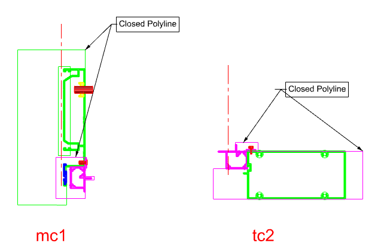

PolyLine
PolyLine is used as a reference line for controlling Surface extrusion shape or for creating holes, cuts, and subtract solids.
Used when you need to refine Surface cross-section shape or require reference lines for holes, cuts, and subtract solids. By drawing a PolyLine on the same layer as the subtract target solid, that shape is removed from the section during modeling, making it suitable for predefined machining or cutting shapes.
Pname.
| Item | Description |
|---|---|
| Layer | Any layer can be used, but it must match the target Surface layer. |
| Main Uses | Hole creation, top/bottom cuts, subtract solid geometry |
| Length Reference | Applied based on the Mullion or Transom length in the Wire Frame, same as Surface. |